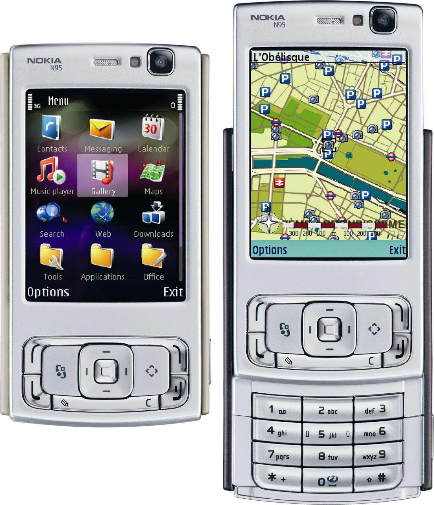

Using my Nokia N95 for fixing my MTA
Published at 2008-12-29T09:10:41+00:00; Updated at 2021-12-01
_
|E]
.-|=====-.
| | mail |
___|________|
||
||
|| www
,;, || )_(,;;;,
<_> \ || \|/ \_/
\|/ \\|| \\| |//
_jgs_\|//_\\|///_\V/_\|//__
Art by Joan Stark
The last week I was in Vidin, Bulgaria with no internet access and I had to fix my MTA (Postfix) at host.0.buetow.org which serves E-Mail for all my customers at P. B. Labs. Good, that I do not guarantee high availability on my web services (I've to do a full time job somewhere else too).
My first attempt to find an internet café, which was working during Christmastime, failed. However, I found with my N95 phone lots of free WLAN hotspots. The hotspots refused me logging into my server using SSH as I have configured a non-standard port for SSH for security reasons. Without knowing the costs, I used the GPRS internet access of my German phone provider (yes, I had to pay roaming fees).

With Putty for N95 and configuring Postfix with Vim and the T9 input mechanism, I managed to fix the problem. But it took half of an hour:
- First, getting a shell prompt
- Second, use the "tail" command to analyse the Postfix logs
- Third, use the "sed" command to fix a syntax error in the Postfix config
- Fourth, restart Postfix
It was a pain in the ass. My next mobile phone MUST have a full QWERTY keyboard. This would have made my life lots easier. :)
At the moment I am in Sofia, Bulgaria. Here I can use at least an unprotected WLAN hotspot which belongs to one of the neighbours which I don’t know in person, and it is not blocking any port at all :)
E-Mail your comments to paul@nospam.buetow.org :-)
Back to the main site